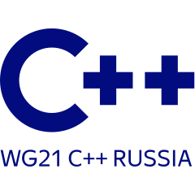

Предложения по C++, книги и другие публикации
Boost Application Development Cookbook
Второе Издание
Если вы хотите постичь истинную мощь библиотек Boost и C++, избежать путаницы с выбором подходящей Boost библиотеки, тогда эта книга для вас.
Будьте уверены, что знания из этой книги не устареют, так как всё больше и больше частей библиотеки Boost становятся частью стандарта C++.

Предложения по улучшению языка C++
Принятые, Отклонённые и в Рассмотрении:
Эти бумаги (за моим авторством/соавторством) обсуждаются в ISO/IEC JTC1/SC22/WG21 и со временем становятся частью языка C++17/C++20/...
- ⌛ P0652R1: Конкурентная ассоциативная структура данных с не синхронизированным представлением
- ⌛ P1406R0: Хеширование для контейнеров и pair/tuple
- ⌛ P1424R0: Feature testing macro и constexpr нововведения
- ⌛ P0881R3: Stacktrace - сохранение и последующий вывод стектрейса (текст для включения в стандард)
- ⌛ P0880R2: Взаимодействие классов чисел
- ⌛ P0889R1: Беспредельный copy elision (с правками проблем 1995 года)
- ♻ P0652R1: Конкурентная ассоциативная структура данных с не синхронизированным представлением
- ✔ P1032R1: Ещё constexpr
- ❌ P0275R4: Динамическая загрузка библиотек
- ⌛ P1149R0: Constexpr regex - построение конечного автомата для регулярных выражений на этапе компиляции
- ♻ P0881R2: Stacktrace - сохранение и последующий вывод стектрейса (текст для включения в стандард)
- ❌ P1201R0: Variant - операторы для сравнения std::variant со значением
- ⌛ P0539R4: wide_integer: целые числа, заданного на этапе компиляции размера
- ✔ P0881R1: Stacktrace - сохранение и последующий вывод стектрейса
- ♻ P0880R1: Взаимодействие классов чисел
- ♻ P1032R0: Ещё constexpr
- ♻ P0881R0: Stacktrace - сохранение и последующий вывод текущей последовательности вызовов
- ♻ P0889R0: Беспредельный copy elision
- ⌛ D0890R0: Безопасный range based for
- ♻ P0275R3: Динамическая загрузка библиотек
- ♻ P0880R0: Взаимодействие классов чисел
- ⌛ P0878R0: Copy elision для субобъектов
- ✔ P0879R0: Constexpr swap и алгоритмы его использующие
- ♻ P0539R3: Целые числа, заданного на этапе компиляции размера
- ✔ P0858R0: Constexpr категория итераторов
- ✔ P0415R1: Contexpr для std::complex
- ✔ P0202R3: Contexpr алгоритмы не использующие swap
- ♻ P0539R2: Wide Int
- ♻ P0275R2: Динамическая загрузка библиотек
- ♻ P0652R0: Конкурентные ассоциативная структура данных с не синхронизированным представлением
- ♻ P0539R1: Целые числа, заданного на этапе компиляции размера
- ✔ P0639R0: Изменение угла атаки для constexpr_vector
- ♻ P0539R0: Целые числа, заданного на этапе компиляции размера
- ✔ P0426R1: Constexpr для std::char_traits
- ♻ P0426R0: Constexpr для std::char_traits
- ♻ P0415R0: Constexpr для std::complex
- ♻ P0275R1: Плагины/Динамическая загрузка библиотек
- ♻ P0275R0: Плагины/Динамическая загрузка библиотек
- ❌ P0276R0: Аттрибут [[visible]]
- ♻ P0202R2: Constexpr алгоритмы
- ♻ P0202R1: Constexpr модификаторы для <algorithm> и <utility>
- ♻ P0202R0: Constexpr модификаторы для <algorithm> и <cstring>
- ✔ P0031R0: Добавление Constexpr модификаторов к reverse_iterator, move_iterator, array и Range Access
Boost Application Development Cookbook
Первое Издание
Вы научитесь использовать Boost библиотеки для упрощения своей повседневной разработки. Научитесь преобразовывать типы данных, писать парсеры, управлять ресурсами. Увидите как можно выполнять вычисления на этапе компиляции и как контейнеры из Boost помогут ускорить ваши приложения. Всё что необходимо для написания высококачественных производительных и портабельных приложений описано в книге.
Работа с изображениями и графами, файловой системой, таймерами, сетью, многопоточностью – каждый сможет найти интересую для себя тему.

Публикации на Habrahabr
«Хабр» — крупнейший в Европе ресурс для IT-специалистов, профессиональная площадка, которую ежемесячно посещает более 8 миллионов уникальных пользователей.
- С++20 на подходе! Встреча в Рапперсвил-Йона
- C++20 всё ближе. Встреча в Джексонвилле
- Ещё один шажок к C++20. Встреча в Альбукерке
- Пишем свою книгу заново
- На шаг ближе к С++20. Итоги встречи в Торонто
- Что приняли в C++17, фотография Бьярне Страуструпа и опрос для C++20
- С++17 и С++2a: новости со встречи ISO в Иссакуа
- Последние новости о развитии C++
- Сотрудники Яндекса будут представлять Россию в комитете по стандартизации C++
- Онлайн-компиляция на статическом сайте, рецепт для начинающих
- Администрирование глазами C++ программиста
- Web-технологии глазами С++ программиста
- C++ трюки и советы из Boost на каждый день
- Пишем свою книгу
- Спецификатор времени компиляции noexcept в C++11